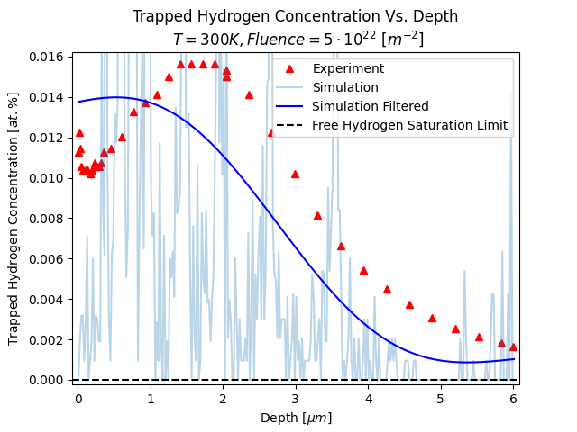
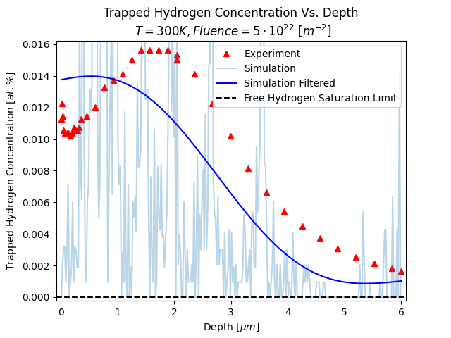

Developed hydrogen transport simulation code for the Marian Lab at UCLA, integrating new features such as hydrogen desorbing out of the surface and hydrogen bubbles forming without preexisting vacancies. I also tested experimental features such as parallelizing the code with MPI. Currently investigating new bubble growth mechanism that could explain why some materials retain less hydrogen than others, to develop more resistant materials for intense nuclear fusion environments.
Created a graphic user interface with Grafana and InfluxDB to visualize engine hot fire results from UCLA's Rocket Project team. Wrote script to read past data from spreadsheet and send the data to InfluxDB. The Grafana GUI would then display the incoming data, creating real-time gauges and time-series plots. Was used to playback previous year's data in real time, but also has the capability to visualize live data if given a live data source.
Code unavailable due to organization privacy.
Developed simulator using UUV-Simulator plugin to allow instant testing of navigation, motor control, and machine-learning object detection algorithms. Wrote interface modules so that in simulation mode, mission stack interacted with software environment, whereas in real-life mode, the same mission code switched seamlessly to communicating with real microcontrollers.
The visual filter is not my work, but the object detection is.
Integrated EfficientDet-D0 machine learning model for object detection into our code stack by collecting image dataset, labeling data, and training model, after which I wrote code to access the model, feed it images, and read inference/detection data. Achieved similar accuracy as previous vision models with 2-3x faster inference speed on cheaper hardware.
Implemented cascade PID controller that controlled both velocity and position of submarine on Arduino microcontroller. Processed data from Doppler-Velocity-Log, Attitude and Heading Reference System (AHRS), and pressure sensor to calculate optimal motor thrusts. This allowed for sub-inch precision position control on this bulky submarine, resulting in 2x successful autonomous torpedo shots during competition.
I was in charge of the software team. Aforementioned simulator allowed us to fine-tune navigation code before competition, and machine learning object detection allowed us to accurately detect competition objects, leading to 2nd place finish out of 35+ international collegiate competitors. 1st place winner was National University of Singapore.
I ran the code at in-person tests and the simulations shown.
Designed mid-powered rocket using OpenRocket software. Drafted nose cone and shoulder connecting piece in SolidWorks CAD. Manufactured rocket by 3D printing nose cone and shoulder, laser cutting wooden fins, and performing carbon fiber epoxy layups.
Designed (CAD with SolidWorks), 3D-printed, tested, and iterated payload delivery module, designed to hold water bottles that are dropped from a drone at 75+ ft. Thinned out the walls in a later iteration to reduce weight.